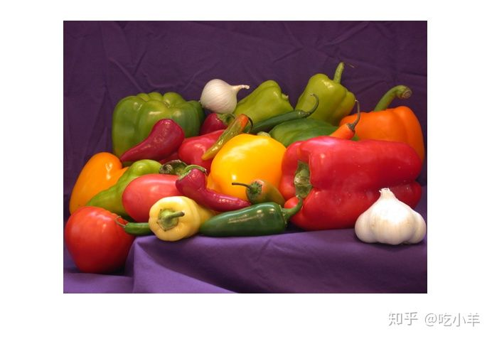
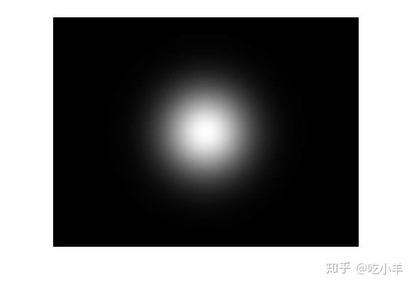
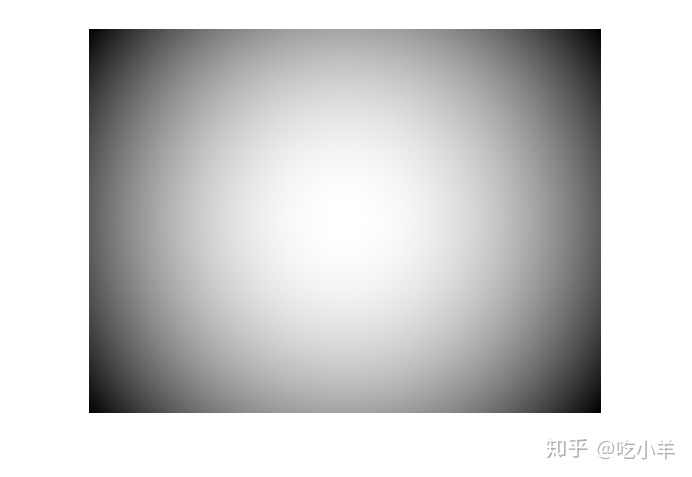
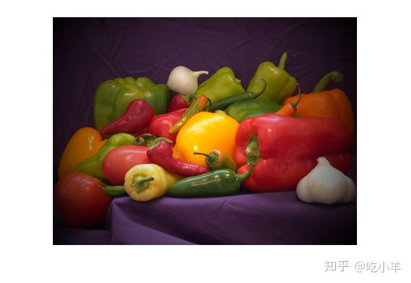

Home
本示例说明如何创建和应用强度沿径向向外增加的过滤器。
读取并显示图像。
I = imread('peppers.png');
I = im2double(I);
imshow(I)

使用高斯加权函数模糊图像
使用标准偏差为2的高斯滤镜创建图像的模糊副本。
Iblurred = imgaussfilt(I,2); imshow(Iblurred)
创建与图像大小相同的权重图像作为高斯滤镜。要增加图像中显得清晰的部分，请增加filterStrength的值。
filterStrength = 50;
weights = fspecial('gaussian',[size(I,1) size(I,2)],filterStrength);
imshow(weights,[])

使用rescale函数将权重图像标准化到[0，1]范围。
weights = rescale(weights);
创建一个加权模糊图像，该图像是原始图像和模糊图像的加权和。MATLAB自动为每个R，G和B颜色通道复制权重矩阵。
IweightedBlurred = I.*weights + Iblurred.*(1-weights);
显示结果。图像在中心清晰，并且径向向外变得更加模糊。要增加图像的清晰部分的比例，请增加权重值。
imshow(IweightedBlurred)
使用1 / R ^ 2加权函数的小插图图像
获取图像的大小。
sizex = size(I,2); sizey = size(I,1);
指定小插图的中心。
xcenter = size(I,2)/2; ycenter = size(I,1)/2;
定义曲面的x和y坐标。
[X,Y] = meshgrid((1:sizex)-xcenter,(1:sizey)-ycenter);
在每个（x，y）坐标处定义从中心开始的半径。
R2 = X.^2 + Y.^2;
将加权函数定义为R的倒数，缩放范围为[0，1]。
R2 = rescale(R2); weights = (1-R2); imshow(weights)

将加权功能应用于图像并显示结果。
I2 = I.*weights; imshow(I2)

======================================================================
我的测试结果及程序
下面是我测试的代码：

注：本文根据MATLAB官网内容修改而成。